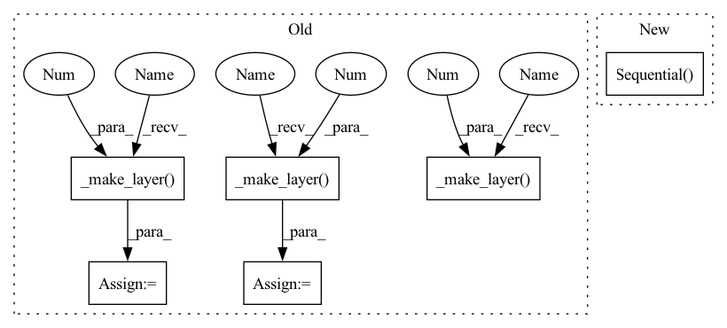

Pattern ID :22125

Before Change
super().__init__()
self.maxpooling_22 = nn.MaxPool2d(2, 2)
self.maxpooling_21 = nn.MaxPool2d((2, 2), (2, 1), (0, 1))
self.layer1 = self._make_layer(in_channels, 64, 3, 1, 1)
self.layer2 = self._make_layer(64, 128, 3, 1, 1)
self.layer3 = self._make_layer(128, 256, 3, 1, 1)
self.layer4 = self._make_layer(256, 256, 3, 1, 1)
self.layer5 = self._make_layer(256, 512, 3, 1, 1)
self.layer6 = self._make_layer(512, 512, 3, 1, 1)
self.layer7 = self._make_layer(512, 512, 2, 1, 0)
self.rnn = BidirectionalLSTM(512, rnn_size, number_class_symbols)
def _make_layer(self, in_channels, out_channels,
kernel_size, stride, padding):
After Change
self.avg_pool = nn.AdaptiveAvgPool2d(
(time_feature_count, time_feature_count))
self.bilstm = BiLSTM(time_feature_count, lstm_hidden, lstm_len)
self.classifier = nn.Sequential(
nn.Linear(lstm_hidden * 2, time_feature_count),
nn.GELU(),
nn.Dropout(0.1),
nn.Linear(time_feature_count, number_class_symbols)
)
def forward(self, x):
x = self.feature_extractor(x)
b, c, h, w = x.size()
In pattern: SUPERPATTERN
Frequency: 3
Non-data size: 6
Instances
Fragment ID: 70089901
Project Name: sberbank-ai/ocr-model
Commit Name: db55ee227e236d8da2dc2323804c42dd7f6b14b4
Time: 2021-09-28
Author: kalinin@sent.com
File Name: ocr/src/models.py
M Class Name: CRNN
N Class Name: CRNN
M Method Name: __init__(5)
N Method Name: __init__(4)
M Parent Class: nn.Module
N Parent Class: nn.Module
M File Name: ocr/src/models.py
N File Name: ocr/src/models.py
M Start Line: 23
M End Line: 32
N Start Line: 28
N End Line: 40
'>
Before Change
super().__init__()
self.maxpooling_22 = nn.MaxPool2d(2, 2)
self.maxpooling_21 = nn.MaxPool2d((2, 2), (2, 1), (0, 1))
self.layer1 = self._make_layer(in_channels, 64, 3, 1, 1)
self.layer2 = self._make_layer(64, 128, 3, 1, 1)
self.layer3 = self._make_layer(128, 256, 3, 1, 1)
self.layer4 = self._make_layer(256, 256, 3, 1, 1)
self.layer5 = self._make_layer(256, 512, 3, 1, 1)
self.layer6 = self._make_layer(512, 512, 3, 1, 1)
self.layer7 = self._make_layer(512, 512, 2, 1, 0)
self.rnn = BidirectionalLSTM(512, rnn_size, number_class_symbols)
def _make_layer(self, in_channels, out_channels,
kernel_size, stride, padding):
After Change
self.avg_pool = nn.AdaptiveAvgPool2d(
(time_feature_count, time_feature_count))
self.bilstm = BiLSTM(time_feature_count, lstm_hidden, lstm_len)
self.classifier = nn.Sequential(
nn.Linear(lstm_hidden * 2, time_feature_count),
nn.GELU(),
nn.Dropout(0.1),
nn.Linear(time_feature_count, number_class_symbols)
)
def forward(self, x):
x = self.feature_extractor(x)
b, c, h, w = x.size()
'>
Fragment ID: 70089900
Project Name: sberbank-ai/ocr-model
Commit Name: db55ee227e236d8da2dc2323804c42dd7f6b14b4
Time: 2021-09-28
Author: kalinin@sent.com
File Name: ocr/src/models.py
M Class Name: CRNN
N Class Name: CRNN
M Method Name: __init__(5)
N Method Name: __init__(4)
M Parent Class: nn.Module
N Parent Class: nn.Module
M File Name: ocr/src/models.py
N File Name: ocr/src/models.py
M Start Line: 23
M End Line: 32
N Start Line: 28
N End Line: 40
'>
Before Change
nn.BatchNorm2d(64),
)
self.layer1 = self._make_layer(
cell_config,
64,
num_blocks[0],
stride=1,
)
self.layer2 = self._make_layer(
cell_config,
128,
num_blocks[1],
stride=2,
)
self.layer3 = self._make_layer(
cell_config,
256,
num_blocks[2],
stride=2,
)
self.layer4 = self._make_layer(
cell_config,
512,
num_blocks[3],
After Change
self.stages = nn.Sequential(*stages)
self.classifier = nn.Sequential(
nn.Linear(channels_per_stage[-1] * block_expansion, num_classes),
)
def _make_layer(self, cell_config, planes, num_blocks, stride, expansion=1):
layers = [
'>
Fragment ID: 70090027
Project Name: jack-willturner/gymnastics
Commit Name: e7d1d2b9d4c2accd57f069dfac24884c470794bf
Time: 2021-06-30
Author: jackwilliamturner@icloud.com
File Name: gymnastics/searchspace/skeletons/resnet_skeleton.py
M Class Name: ResNetCIFARSkeleton
N Class Name: ResNetCIFARSkeleton
M Method Name: __init__(7)
N Method Name: __init__(5)
M Parent Class: Skeleton
N Parent Class: Skeleton
M File Name: gymnastics/searchspace/skeletons/resnet_skeleton.py
N File Name: gymnastics/searchspace/skeletons/resnet_skeleton.py
M Start Line: 11
M End Line: 48
N Start Line: 13
N End Line: 48